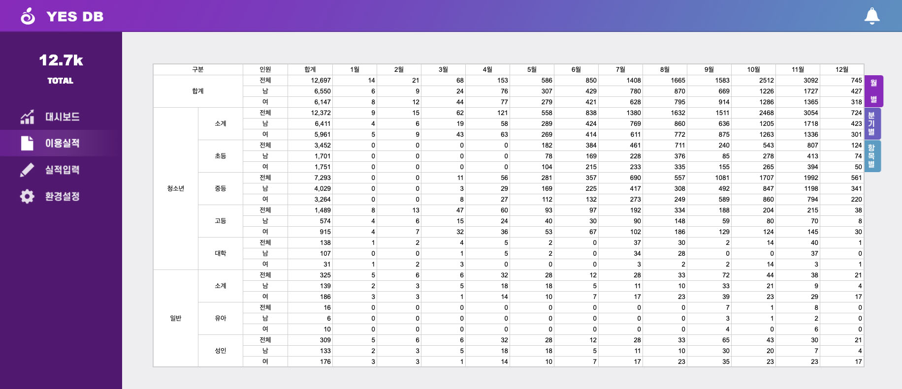
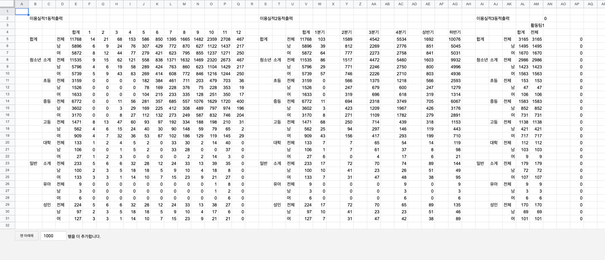

YES DB
개발배경
제가 일하던 수련관은 신규 개관된 곳이었고, 전산 시스템의 외주 개발이 지연되고 있었습니다. 때문에 실적을 보고할 때가 되면, 엑셀 파일을 릴레이 경주 하듯이 다음 사람에게 전달하여 집계해야 했습니다.
문제는 업무 특성상 외부 학교로 나가거나 사무실 자리에 없는 경우가 많아 중간에 끊기거나 지연될 우려가 있었습니다. 이에 누구나 자신의 데이터를 입력해 둘 수 있고, 입력된 데이터를 실시간으로 조회할 수 있는 프로그램을 만들면 좋겠다는 생각을 했습니다.
군대에서 엑셀을 이용해 여러 간단한 프로그램을 만든 경험이 있었기 때문에 엑셀을 기반으로 제작하고자 했고, 다중 인원 접속이 가능해야 했기 때문에 구글 시트를 선택하게 되었습니다.
프로젝트 개요
- 목적 : 수련관 사업실적의 상시 집계 및 실시간 통계 확인이 가능한 프로그램의 개발
- 개발환경 : Window 10, Google Sheet
- 주요사용기술
- Google Sheet : 통계, 검색, 논리함수, 데이터 제어기능
- Google Apps Script : 화면, 시트 제어
- 개발인원 : 1인
- 주요기능
- 수련관 이용 및 활동 프로그램 참여실적 집계
- 조건별 통계 조회 (연령, 담당부서, 사업명, 날짜 등)
- 비주얼적으로 통계 확인이 가능한 대시보드
개발포인트
1. 사용자의 오입력을 구조적으로 방지했습니다.
30여명이 사용해야하는 상황에서 가장 걱정되었던 것은 사용자가 사업명에 오타를 내거나, '청소년운영위원회'와 '청소년 운영 위원회'처럼 띄어쓰기를 다르게 해 집계가 잘못되는 상황이었습니다.
이를 방지하기 위해 입력창을 선택하면 입력 가능한 목록이 나타나도록 하였습니다.
목록에 없는 내용을 강제로 입력하면 에러 메시지가 나옵니다.
구분에 어떤 팀을 선택했는지에 따라 입력할 수 있는 사업명 목록이 동적으로 변합니다.
사업명과 목표치를 언제든지 변경할 수 있게 환경설정 페이지를 제공했습니다.
2. 사용자 이용 화면과 시스템 로직을 분리했습니다.
시트에서 어떤 집계 데이터를 출력할 때는 그 셀 안에 직접 함수를 적게 됩니다. 문제는 사용자들이 셀을 잘못 건드려 수식이나 함수가 고장 날 수 있다는 것입니다.


이것을 해결하기 위해 실제 함수가 작성된 부분은 별개의 시트를 만들어 편집권한을 제한한 뒤 숨겨두고, 사용자 화면에서는 INDIRECT 함수를 사용하여 그 출력값만을 참조하여 출력하도록 구현했습니다.
이렇게 하면 사용자 화면에서 셀을 잘못 조작 하더라도 원본에 영향을 미칠 수 없기 때문에 자동으로 복구가 됩니다.
3. 시트 내장함수의 한계를 Apps Script로 보완했습니다.
입력된 데이터를 사용자가 접근할 수 없는 뒷단으로 전송하고자 하였으나 내장함수로는 구현이 불가능했습니다. 조사결과 Google Sheet에서는 자바스크립트와 유사한 Apps Script라는 API를 제공하고 있었고 이것을 공부하여 입력부를 구현할 수 있었습니다.
입력부에 데이터를 입력하고 초록색 버튼을 누르면 별개의 시트인 데이터 저장 테이블로 입력된 데이터를 이동합니다. 조회부에서는 다시 데이터 저장 테이블을 INDIRECT 함수로 참조하여 현재까지 입력완료된 데이터 목록을 출력합니다.
빨간색 버튼은 입력부에서 입력 가능한 데이터를 제한하는 로직이 깨졌을 때를 위해 만든 리셋 버튼입니다. 데이터 저장 테이블의 윗부분에 있는 정상적인 입력창을 사용자 화면 입력부에 덧씌워 리셋합니다.
그 외 화면 내 UI의 이동버튼들이 Apps Script로 동작합니다.
4. 꾸준히 유지보수 하고 신규 요구사항을 반영하여 업데이트했습니다.
휴먼 에러를 막기 위해 여러가지 장치를 했으나 가끔 버그가 나타날 때가 있어 꾸준히 모니터링을 하여 버그를 고치고 스크립트를 개선했습니다.
그 외 이용자의 요구에 따라 신규 화면을 몇가지 업데이트했습니다.
실적 보고 담당자의 요구로 만들어진 실적 출력용 페이지입니다. 월을 입력하면 양식에 맞게 해당 월의 사업과 실적 내용을 집계하여 나타냅니다.
상부의 요구로 만들어진 대시보드 페이지입니다. 각종 지표를 시각적으로 확인할 수 있게 표현했습니다.